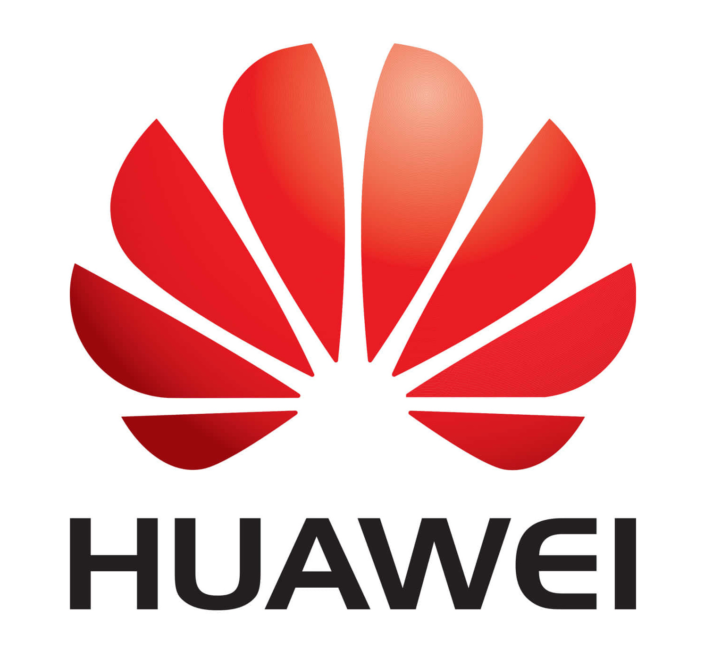

Education
Brown University
09/2025 – 05/2027
Machine Learning
Deep Learning
Artificial Intelligence
Computer Graphics
University of Nottingham
09/2021 – 06/2025
Artificial Intelligence
Computer Vision
Operating Systems
Software Engineering
Programming & Algorithm
Data Structures
Technical Skills
Back-end
Java
Python
C
C++
SQL
Unity
Front-end
HTML/CSS
JavaScript
Java Swing
JavaFX
JavaFX
JUnit
Others
Machine Learning (NumPy, PyTorch)
Deep Learning
Object-Oriented Programming
Computer Vision
Computer Graphics
Experience

Huawei Technologies Co., Ltd.
07/2024 – 09/2024
- Co-implemented data ingestion pipelines for an internal AI-powered Q&A system using Python and SQL, supporting large-scale knowledge import and structured storage.
- Built and optimized knowledge governance and validation workflows, identifying and resolving corpus inconsistencies that improved response accuracy and system reliability.
- Conducted comparative evaluation of multiple LLM-based solutions, analyzing precision, recall, and stability metrics to select a more robust production model.
- Collaborated with cross-functional teams to diagnose failure cases in AI responses and iteratively refine data quality and retrieval logic, directly improving end-user performance.
07/2022 – 08/2022
Computer Vision Team Member (Supervisor: Prof. Yike Guo)
Python / Computer Vision / Deep Learning / Tensorflow.keras
- Collaborated to classify and segment brain tumor using Numpy and Tensorflow.
- Collaborated with the team to utilize a MobileNetV2-based U-Net model with Dice Score as the loss function, and to optimize the model using the Adam optimizer, contributing to the efficient and accurate segmentation of brain tumours in medical images.
- Performed cross-validation to assess the model’s accuracy, achieving a segmentation accuracy of 19% out of 20% and a model design score of 18% out of 20%
- Contributed to the project report and presentations, winning the Best Presentation Award and a distinction grade.
Undergraduate Research
06/2023 – 08/2023
Front-End Team Leader (Supervisor: Dr. Yuan Yao)
Java / Java Swing / OOP
- Led a team to develop a simulation platform for BDI agents, allowing agents to autonomously plan routes and complete tasks based on beliefs, desires, and user-defined intentions., supporting large-scale knowledge import and structured storage.
- Implemented the front-end using Java Swing, and coordinated with the back-end team to ensure real-time data display.
- Organized weekly progress meetings to promote effective communication and regularly optimized the front-end to meet evolving project requirements.
Selected Projects
Intelligent Sports Scheduling App
10/2024 – 05/2025
- Developed an Android app solving multi-constraint amateur sports scheduling problems (venues, team rest intervals, fairness, preferences, ...).
- Implemented Simulated Annealing and heuristic refinement to optimize match fairness.
- Created a real-time App UI for visualizing conflicts and manual schedule adjustments.
Neural VR World
10/2023 – 05/2024
- Developed a VR environment where users could see their brain activities while socializing by integrating VR headsets with brain scanners
- Managed Git workflow (branching, milestones) for a team of 6 engineers.
- Implemented user interaction controls and integrated features like movie selection, volume control, and playback adjustments in a VR cinema environment.
- Coordinated the integration of multiple environments and implemented teleportation features.
Flower Segmentation with OpenCV
02/2024 – 04/2024
- Led a team of 5 to develop a procedure for segmenting flower petals from RGB images with background noise.
- Utilized Gaussian filtering, Otsu thresholding, dilation and erosion to refine edges and remove internal gaps
- Tuned three segmentation methods (region growing, split and merge, and watershed), evaluated using a dice loss function, and achieved 98% accuracy with Watershed.
The Snake Game
10/2023 – 12/2023
- Built a full-featured game with AI enemies, local persistence, and accessibility themes.
- Conducted requirements analysis, UI design, coding, and testing individually to ensuring the game’s functionality.
- Designed the UI with accessibility features, including multiple colour themes for colour-blind users and voice prompts for visually impaired players.
- Implemented rigorous JUnit testing for game logic stability.
Leadership
President
2022 – 2023
- Led a 40-person student organization; provided technical language training to members; organized C programming competitions and weekly tech lectures.
Marketing Department Officer
2021 – 2022
- Established partnerships with external businesses to secure funding and sponsorship for events; organized large-scale events.
Class Representative
2021 – 2025
Honors
Best Presentation Award
2022
ICPC Team Member
2023
3rd Prize
2021